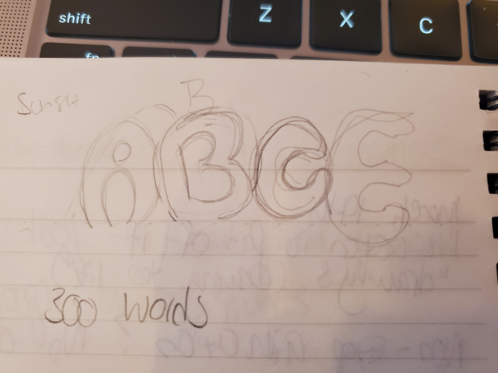

For this font, I was inspired by retro style, yet slanted. Some inspirations I took from is from Bleach and World of Horror.

I started sketching out ideas. I experimented with a variety of looks but stuck with one type;
.When I was creating the CSS, I used grid making a variety points in the columns and rows.
The grid I chose to work with is 20 by 24 I worked in Figma to understand the pixel placements,
If I was to create a font again, I think I would work in a smaller grid, though it was nice how large and defined the letters are, it was tedious to put together. Some letters are a mix and match together or with parts taken out. I should have considered that more when creating the sketch of the typeface to lessen the workload. Overall, if I continue to add to the typeface, I would add the glow effect around the letters. I think I can do that by repeating the grid by offsetting it and making the grid larger.